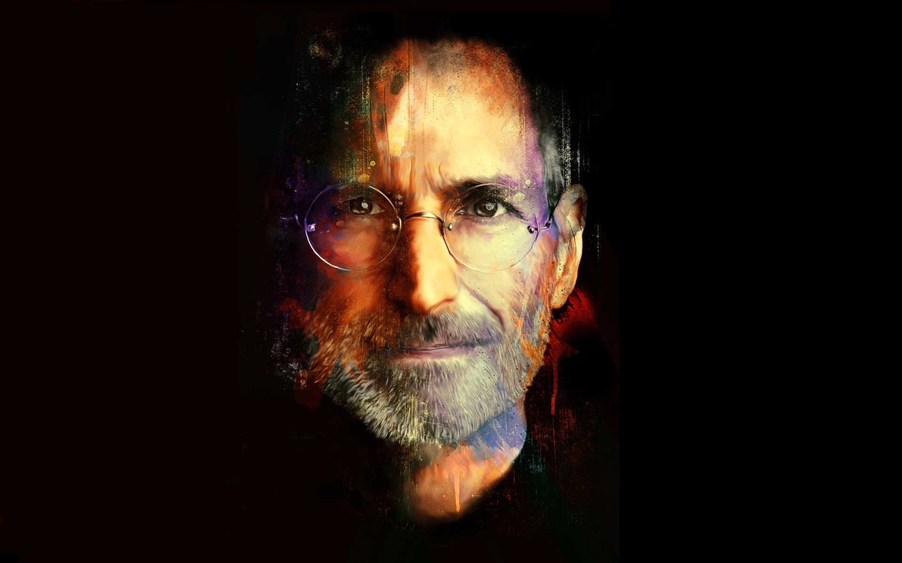

"Stay Hungry, Stay Foolish", a motto that followed him through life

A beautiful photoshoped photo of STEVE JOBS.
Here's is some facts about Steve Jobs:
Steven Paul Jobs was born on February 24, 1955.
Steve Jobs was adopted shortly after being born.
Jobs was, biologically, half Arab. His biological father was Syrian and his mother was American.
Jobs and Apple co-founder Steve Wozniak met in high school--Wozniak was 18 and Jobs was just 13.
He had a pretty low GPA--just 2.65. Jobs admitted he never enjoyed school structure and preferred to learn in unconventional ways.
He spent seven months traveling around India, experimenting with psychedelic drugs and eventually adopting the practices of Zen Buddhism.
The movie Anywhere But Here is based on a book written by Jobs's sister, Mona Simpson. The movie is dedicated to Jobs.
Apple co-founder Steve Wozniak notes that Jobs never learned how to code.
Apple has been ranked No. 1 on Fortune's list of America's most admired companies.
obs died at his Palo Alto, California, home around 3 p.m on October 5, 2011
“You can’t connect the dots looking forward; you can only connect them looking backwards. So you have to trust that the dots will somehow connect in your future.”
-- Steve Jobs
If you have time, you should read more about this incredible human being on his Wikipedia entry.